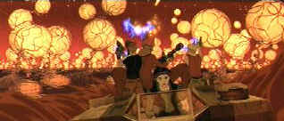

| Titan AE (SE)/C,A |
| Fox/2000/95/ANA 2.35 |
An animated Scifi adventure needs at least one outstanding element to make it
sing. Sadly, Titan AE needs voice lessons. The animation is lackluster except in a few
bursts of energy that could almost have snuck in as CGI work in a live action film. The choice of a
dull, brown dominated palette as a color scheme doesn't help matters, and the animation often seems
cheap and choppy.
The story is mundane at best. Cale, a young boy abandoned by his father during
an Alien doomsday attack on Earth grows up filled with resentment. Years later, when the boy grows
to strapping manhood, a comrade of his father's appears from nowhere and informs him that he is the
last chance for human survival. And so the quest for the Titan AE begins, the legendary ship
that will restore human kind. But the Drej, evil aliens who annihilated the Earth fifteen years
before, are hot on the trail of Cale.
To provide some interest and conflict along the space hunt, there's a
pretty hot shot pilot Akima who Cale falls fancies, the tough veteran space soldier Korso and
several crew member sidekicks to provide some laughs.
You could say the fact that I did not turn off the DVD before it ended is a tribute to
the story telling, but I wouldn't say so. I was minimally engaged in the plight to prevent final
destruction of the human species, but I never had any doubt as to the outcome. The supporting
characters are truly a strained bunch of refugees from Star Wars and Looney Tunes.
Titan AE strives for a modern feel in its animation and editing. Unfortunately,
the cutting is reminiscent of space epics that can't sit still long enough to let you see the whole
picture.
 |
| The Drej in hot pursuit. ©Fox |
The voice talents of Matt Damon, Bill Pullman and Drew Barrymore are behind
the animated characters of Cale, Korso and Akima. Both Damon and Pullman are particularly bland in
their dubs. Barrymore manages to impose her froth and charm on Akima.
Titan AE gets a penetrating transfer to DVD in a chock full special
edition. Colors are fully saturated. The image is consistently sharp and the contrast in perfect
balance. Expect bright, snappy pictures throughout the DVD. High transition explosions are
perfectly stable with no bloom. There are no motion artifacts. You can choose from Dolby Digital
5:1 or DTS Surround tracks. The DTS Surround is delivered with usual extra punch and excess
decibels. Bass response is excellent and action fully directional. Better keep a sharp ear out for
flying space objects.

Selections from the feature archive include articles on
Akira Kurosawa, Frank
Darabont, Blonde Bimbos, Hollywood Street Gangs, or Vietnam: The
Hollywood Pariah, and many more....
Redeeming
the Writer:
A Conversation with Frank Darabont


News, information, features about current films in theaters and in the
pipeline. Easy to use interface.

Home of The American Film Institute.

Click on the link to visit the judge's chambers.

The National Film Preservation Foundation (NFPF) is the nonprofit organization created by the U.S. Congress to save
America's film heritage.
 Direct from the corridors of the Home Theater Forum, Home Theater Talk is the
newest place on the Net to discuss everything home theater. Friendly atmosphere and knowledgeable
folks are the secret ingredients.
Direct from the corridors of the Home Theater Forum, Home Theater Talk is the
newest place on the Net to discuss everything home theater. Friendly atmosphere and knowledgeable
folks are the secret ingredients.

The Movie Poster Archive includes extensive poster images from the films of stars like Susan Hayward, Kirk Douglas, Katharine Hepburn and many more. Our featured star is Tyrone Power